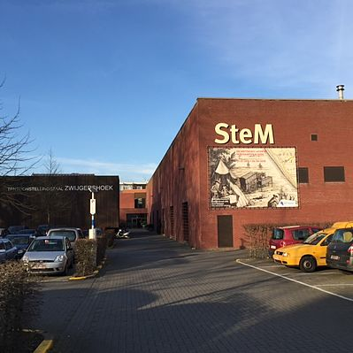
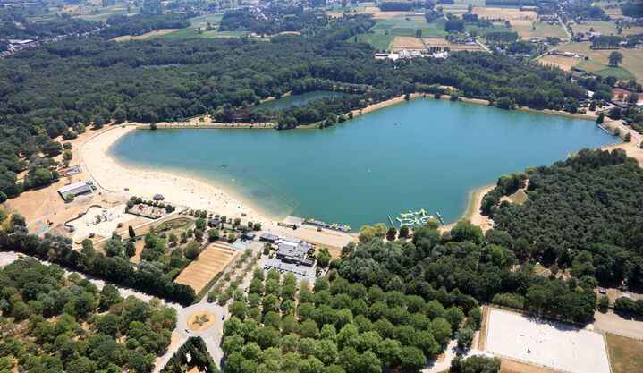

 Een voormalige textielfabriek in het stadscentrum werd omgebouwd tot een cultuurhistorisch museum.
In het eerste deel Mens en materie zie je hoe onze voorouders creatief omgingen met grondstoffen zoals ijzererts en klei. Meer dan 600 archeologische voorwerpen in keramiek, metalen, glas, hout en leder fungeren als stille getuigen van dit verleden. De omvorming van de plattelandseconomie met huisnijverheid naar de geïndustrialiseerde samenleving, met focus op de textiel- en breinijverheid in Sint-Niklaas, biedt genoeg stof voor de tweede verhaallijn Mens en machine. In het derde deel Mens en lichaam besteden we aandacht aan de wijze waarop de mens in het verleden omging met hygiëne, lichaams- en haarverzorging.
De geschiedenis van de breinijverheid in Sint-Niklaas en omstreken komt tot leven in het brei-atelier.
In een publiek toegankelijk depot trek je op ontdekkingstocht door de museumreserves.
 De Ster is een natuur- en recreatiegebied in de Belgische stad Sint-Niklaas. Het domein ligt ten oosten van het stadscentrum in de buurtschap Ster en is zo'n 100 ha groot. In het domein ligt een zwem- en roeivijver met een oppervlakte van zo'n 20 ha en een maximale diepte van 11 meter en een visvijver van zo'n 8 ha.
Daarnaast beschikt De Ster over een speeltuin, kinderboerderij, een kruidentuin en sportfaciliteiten, waaronder een atletiekbaan en een sporthal.